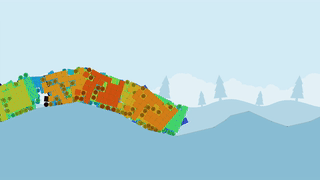

This Month in Rust GameDev #25 - August 2021
Welcome to the 25th issue of the Rust GameDev Workgroup's monthly newsletter. Rust is a systems language pursuing the trifecta: safety, concurrency, and speed. These goals are well-aligned with game development. We hope to build an inviting ecosystem for anyone wishing to use Rust in their development process! Want to get involved? Join the Rust GameDev working group!
You can follow the newsletter creation process by watching the coordination issues. Want something mentioned in the next newsletter? Send us a pull request. Feel free to send PRs about your own projects!
- Game Updates
- Learning Material Updates
- Engine Updates
- Tooling Updates
- Library Updates
- Popular Workgroup Issues in Github
- Requests for Contribution
Rusty Jam
The first (unofficial) Rust Game Jam just completed! The Rusty Jam is a game jam to work on games made completely in Rust. 19 games were completed and submitted over the one-week jam. The games were rated by the community, and the top three games were:
- First place: Winter by MrRafael
- Second place: Murder User Dungeon by Sheepyhead, cdsupina, and Nightlyside
- Third place: To be Dire by mdaffin, TimeLark and septum
The Rusty Jam will be back, so stay tuned on the Rusty Jam Discord Server for more updates!
Rust GameDev Meetup

The eighth Rust Gamedev Meetup happened in August. You can watch the recording of the meetup here on Youtube. The meetups take place on the second Saturday every month via the Rust Gamedev Discord server and are also streamed on Twitch. If you would like to show off what you've been working on at the next meetup on September 11th, fill out this form.
Game Updates
Pixie Wrangler
 Click the image to play the game in your desktop browser!
Click the image to play the game in your desktop browser!
Pixie Wrangler (itch.io, GitHub) by @rparrett is a puzzle game reminiscent of old school printed circuit board design software.
Help the Pixies get from their outputs to their inputs while doing battle with the intentionally less-than-ergonomic circuit design software. Pixie Wrangler is currently a prototype, but includes 9 complete levels.
Pixie Wrangler was built with Bevy 0.5 with support from these other great projects: bevy_webgl2, bevy_prototype_lyon, bevy_asset_ron, bevy_easings.
vange-rs
 vange-rs on wgpu-0.10
vange-rs on wgpu-0.10
Vange-rs is a rewrite of the iconic Vangers game from 1998 in Rust, heavily utilizing GPU for rendering.
The rendering engine has seen a major upgrade. Essential shaders were rewritten into WGSL, which streamlined the shader pipelines and culled out the dependency tree. Code was ported on the latest wgpu-0.10 release and helped identify a few issues. Most importantly, this change made the game able to finally be distributed, and maybe even compiled for the Web in the future. Read more on the WGSL-related blog post.
In order to take advantage of the new superpowers, the Rusty Vangers game (the new working title) was published on Itch.io.
RecWars
 Click the image to play in
your browser
Click the image to play in
your browser
RecWars by @martin-t is a free and open source Rust clone of RecWar, a top down vehicle shooter.
The game is a work-in-progress, this month it gained split-screen for 2 players and an in-game console to change cvars - you can edit any of the configuration variables that define its gameplay balance while playing.
RecWars uses the macroquad engine so it can be played on the desktop as well as in the browser.
Vehicle Evolver Deluxe
 Vehicle Evolver Deluxe in action!
Vehicle Evolver Deluxe (GitHub, Twitter) by @bauxitedev is a simulation that runs in your browser, using AI (to be specific: genetic algorithms) to try to build better and better vehicles. The vehicles have to overcome an obstacle course, starting with some slight hills, followed by steeper hills, and finally some jumps. The vehicles are made out of panels and wheels, connected together, similar to the game Besiege, except in 2D. It was built using Rust and the Bevy game engine.
Try the live web demo here. (It needs a relatively fast computer, on mobile browsers, it'll run really slow.)
Liminal Lab 000
Click the image to play the game in your desktop browser!
Liminal Lab 000 (live version) by @pebaz is a tiny, minimalistic puzzle game with 1 puzzle designed around the concept of Liminal Spaces. Liminal Spaces are usually abandoned, transitional places where life once thrived. These spaces are somehow familiar to the viewer but the viewer has never been there. The unsettling feeling of being alone comes from the realization that the viewer does not belong in that space but is merely passing through it.
Liminal Lab 000 was built using Macroquad, utilizes voxel rendering with 8x8x8 chunks, and is hosted on Google Firebase Hosting.
Discussions: /r/rust_gamedev
Not Snake

Not Snake (GitHub, Itch) by Michael Ramirez is a 3D snake game where you don't play as the snake.
Not Snake was developed using the Bevy game engine. It was completed and released for free in August and can be played on Windows, Linux, MacOS, and in browser (Chrome recommended) although there are fewer audio/performance issues running the executables versus the browser version.
There have been several large changes since the last update in June including adding new levels, new music, and adding a narrator who does an OK job of keeping score.
Discussions: /r/rust_gamedev, /r/indiegames
A Day at the Movies
 The kids getting ready to sneak into a movie
The kids getting ready to sneak into a movie
"A Day at the Movies" (GitHub, Itch) by Michael Ramirez is a short game about stealth, movies, and friendship.
"A Day at the Movies" was made using the Bevy game engine in 7 days as part of the Rusty Jam. Despite the placeholder art and lack of audio, it can be played from start-to-finish and is literally guaranteed to bring a smile to all who play it. Just make sure to follow the instructions on how to get into the "Ferris the Crab" movie room.
It's playable in-browser on itch and the code can be viewed on GitHub.
Sombervale

Sombervale (GitHub, itch.io, Twitch) by @blipjoy is a game built in seven days for Rusty Jam. It is styled like an old handheld game with a 160x128 screen resolution and 16-color palette.
The top 3 things that went well for this project were the art, tilemap support, and ECS. On the art side, the silhouettes in the background turned out better than expected. The backlighting (or at least the impression of backlighting) looks quite nice, even in motion. Tilemap support was added near the end of the jam built on tiled. It catapulted development progress from seeing major changes every day to making major changes every hour. shipyard is the Entity Component System crate used in Sombervale. This had a tricky learning curve, but simplified complex interactions between entities.
Something that went poorly was choosing a scope that couldn't possibly be completed on time. As usual, everything turned into a stretch goal! Secondly, a lot of time was allocated to features that didn't make the cut. Much of this was a result of trying to be perfect instead of efficient. It's a good game jam lesson that often has to be relearned the hard way.
Shattersong Online
Shattersong Online is an online sandbox game written in Rust, with the goal of supporting thousands of players in a shared universe, with hundreds of players per shard. In-game portals let players travel between shards hosted on separate physical servers.
Since the initial announcement in July, we have worked on restructuring large parts of the codebase to make adding new content more ergonomic. We tested out the new organization by adding a new monster type from scratch (pictured above).
Read the dev blog for more info, follow @triplehex on twitter for updates, and join the shattersong discord for questions!
The Process
 A
smelter factory setup in The Process
A
smelter factory setup in The Process
The Process by @setzer22 is an upcoming game about factory building, process management, and carrot production, built with Rust using the Godot game engine!
This month has seen a lot of activity: More improvements to the level editor, in-game assets, and general gameplay improvements. But the main focus has been on a new building system with improved ergonomics. The game is now approaching a point where all the core mechanics for the factory simulation are in place, but more in-game content and assets are still required to reach the first playable demo.
This month the game has seen the following changes and improvements:
- New assets like wooden planks, machine parts and mashed carrot cans, with their in-game recipes.
- A new machine, the centrifuge
- A new system to tweak properties with OSD sliders to speed up iteration times. Short explanation here.
- A new egui-powered main menu for the main game screen.
- Improvements to the building system: ghost markers, ramps, walls, machines and conveyor belts!
Discussions: /r/rust_gamedev
Murder-User Dungeon

Murder-User Dungeon (MUD) (GitHub, Itch) by @Nightlyside, @cdsupina, @Shippyhead is a 2D game made for the Rusty Jam 21 in just one week with the theme "Illusion of Security".
Tony is a young man. Finally having his own apartment is a good thing! He will learn how to live by himself and how to enjoy the small things in life like playing on his old retro computer: the Astaria 3600 running SafeOS 3.1.
However, you will quickly realize that the internet is not so friendly. You will meet new people in the Labyrinth(TM) game, and not being friendly to them can have a serious impact on your real life!
In Murder-User Dungeon you will juggle between exploring the Labyrinth(TM) game in your console, hiding from vengeful gamers and making sure you fulfill your human needs.
To win the game, you must reach the end of the Labyrinth(TM)!
The developers aimed to make the player feel that they were safe in their apartment at first - however as the game goes on and the player makes enemies of other gamers in the Labyrinth, they risk them coming to their apartment to get revenge.
The team split development of the game, so that each member could work independently on separate features. While @cdsupina worked on the needs system and the graphics, @Sheepyhead worked on the UI and menus, and @Nightlyside worked on the console and Labyrinth gameplay.
MUD was developed using the Bevy game engine, Rapier2D for collisions, Aseprite for the graphics, and a lot of free assets from the internet (which are credited at the end of the game's description).
Linux and Windows builds are available on the Itch page, and feedback is welcomed!
Discussions: r/rust_gamedev, r/rust, Rusty Jam Discord
Theta Wave
 All mobs ported to Bevy Theta Wave
All mobs ported to Bevy Theta Wave
Theta Wave is an open-source space shooter game by developers @micah_tigley and @carlosupina. In the past month, they have been working towards porting Theta Wave to the Bevy Engine. Most of the work this month has been focused on implementing all of the existing mobs in Bevy and Rapier.
Progress on this port is going strong - you can find the GitHub issue for the port here.
Discussions: Twitter
Shroom Kingdom
 SHRM token distribution
SHRM token distribution
Shroom Kingdom (GitHub, Discord, Twitter) is an upcoming play-to-earn video game built with web technologies running on the NEAR Blockchain.
This month the whitepaper draft has been published and a lot of thoughts have been put into the token economics and how to integrate the game with the blockchain. The Shroom Kingdom DAO (Decentralised Autonomous Organization) is looking for self-motivated people, who want to help build the project. DAO members will be rewarded with the $SHRM token, which will soon be launched on the NEAR mainnet after the final feedback round from NEAR core team members.
A Proof of Concept has also been published for the app, which will be built with Bevy and Rapier compiled to WebAssembly and which uses React for the GUI.
To incentivise early adoption of the project, an NFT airdrop has been announced. The NFT will only be acquirable for a limited amount of time.
Fish Fight

Fish Fight (GitHub, Discord, website) is a love letter to its spiritual predecessor Duck Game.
As promised, after months of private prototyping of early invitees, the Fish Fight devs are finally ready to make their code and community channels available to the general public. They also launched their website! You can read the announcement post and the design doc.
TO BE DIRE
TO BE DIRE by @mdaffin, @TimeLark and @septum, is a prototype survival game made in a week with Bevy for the first Rusty Jam.
The main idea behind the design of TO BE DIRE is venturing out of the safe zone in order to survive, adding elements of gameplay like gathering resources, and maintaining the player character health and hunger, which are common for the genre, finally having the implementation of the monsters and fear system as a way to further address the first Rusty Jam's theme "Illusion of Security". Read more about TO BE DIRE's design in the issues at GitLab.
Download the game at itch.io (available for Linux and Windows) and/or get the source code at GitLab.
Veloren
Exploring the caves
Veloren is an open world, open-source voxel RPG inspired by Dwarf Fortress and Cube World.
In August, lots of preparation was done to get Veloren ready for the 0.11 release coming in September. Work was done on refactoring parts of the codebase, and making server administration more ergonomic. Towers were added, which allow for above-ground dungeons. Skill trees were tweaked for better progression. Modular weapons had a heavy amount of work put into them and were recently merged. Work was done to prevent the camera from clipping through walls as much.
Improvements were made to the physics system, as well as other optimizations to the real-time simulation system. Terrain persistence was completed and is now being tested on the main server. Balancing was done to loot tables, and more animations were added to characters. In September, 0.11 will be released. Come out to the release party on the 11th at 18:00 UTC!
August's full weekly devlogs: "This Week In Veloren...": #131, #132, #133, #134, #135.
What's the word
A UI-based game in which you tap (or miss) buttons. Created with Bevy engine and egui, it demonstrates how small you can scope your project for a (Rusty) game jam!
Humankind's Encyclopedia
Humankind is a Civilization-like game from Amplitude Studios, out of Early Access a few weeks ago. While the game itself isn't written in Rust, its gorgeous encyclopedia and persona sharing service are written using rocket.rs.
Since the encyclopedia has a big constraint of being used inside an embedded in-game browser that has a bit of performance issues with full JS frameworks the team opted for server-side rendering with the Tera template framework.
I had people working on that without any prior rust experience, and they were ready to code in no time thanks to good language documentation & useful compiler messages.
We didn't do anything particularly complex, but the safety of Rust combined with performance enabled us to make this run for way less $$. You don't have to do complex system programming to profit from Rust's benefits.
Engine Updates
rg3d
rg3d (Discord, Twitter) is a game engine that aims to be easy to use and provide a large set of out-of-the-box features. A video was released with updates from version 0.22. Another video about the engine made by @GameFromScratch, with the accompanying article that can be found here.
Lots has been happening with recent rg3d engine development. Physically-based rendering (PBR) was added. High dynamic range rendering is now supported, along with tone mapping, color grading, and gamma correction. Manual and auto-exposure functionality was added for cameras. There is now a widget for editing curves, and it supports custom curves. Lots of usability improvements were made, such as begin able to change the path of resources, UI performance gains, and better ways to manage assets.
Learning Material Updates
Rewriting my mobile game in Rust targeting WASM

@lucamoller published a blog post describing his experience trying to learn Rust by working on a hobby project to migrate his mobile game from a native C++ implementation to a Rust-based one targetting WASM.
The post is written in a storytelling manner going through the author's motivations to work on this project and the main challenges they faced while learning Rust and implementing a game using WASM.
The resulting game, Panda Doodle, runs smoothly on mobile device browsers, and the source code was open sourced to help inspire other developers that wish to venture into implementing WASM-based games in Rust.
Discussions: /r/rust
Tooling Updates
Graphite
Graphite Alpha - Coming very soon
Graphite (GitHub, Discord, Twitter) is an in-development vector and raster graphics editor built on a non-destructive node-based workflow.
Work has progressed on features for the imminent Alpha release. A project website has been designed and will launch this month. Crucial user-facing features have been added: saving/opening documents; a bug report dialog for panics; an auto-generated list of dependency license notices; and a new undo/redo system.
The new Path Tool shows Bézier anchor/control points (soon to be draggable). Rendering performance is much better and scrollbars now work with the infinite canvas. There's a new bounding box around selected shapes that are transformable with Blender-inspired [G]/[R]/[S] keys.
Try it right now in your browser. Graphite is making rapid progress towards becoming a non-destructive, procedural graphics editor suitable for replacing traditional 2D DCC applications. The public alpha release is coming very soon. Join the Discord and get involved!
rx
rx (website, code, community) by @cloudhead is a modern and minimalist pixel editor written in Rust.
Rx is a pixel art editor/animator written in Rust in about 12K LOC, which combines a vim-like modal interface with a cursor-based editor.
Release v0.5 was just published. There are several new commands that help with
color palettes. A flood fill tool has been added. You can now move between
frames with the h and l keys. The command key : has been fixed to help
with non-ANSI layouts. Compatability was added for non x86_64 systems. Support
was added for pasting from the clipboard into the command line. Animation
rendering is now a lot smoother.
Library Updates
GGRS

GGRS by @g_schup is a reimagination of the GGPO P2P rollback network SDK written in 100% safe Rust.
Since the last update, GGRS has released version 0.4.4 and received performance updates and fixes, such as a sparse saving feature. The authors also proudly present bevy_GGRS!
bevy_GGRS is a plugin to integrate GGRS easily into the popular game engine bevy. It features automatic saving and loading of components and resources defined by the user through bevy's reflection tools. The plugin is currently in development and uses features that have not been released in bevy 0.5. With bevy 0.6 on the horizon, bevy_GGRS is planning to publish to crates.io, as well.
If you are interested in developing with GGRS, check the following resources:
wgpu-0.10
unannounced engine on wgpu-0.10
The team has released wgpu-0.10 with a fully rewritten graphics abstraction ("wgpu-hal" instead of "gfx-hal"), as well as naga version 0.6. Read more in Release of a Pure-Rust v0.10 and a Call For Testing.
There were a few issues spotted, but overall it went smooth for such a big change. User libraries were quick to update: iced#1000, kas#241, pixels#187, and others.
On the shader side, in addition to improved validation, hundreds of fixes to the produced outputs, the atomic operations are now supported when using WGSL sources.
The release comes at a cost of DX11 backend, which isn't there comparing to wgpu-0.9. On the plus side, the new GL backend performs much better. It runs most of the examples, and has been successfully tested on Raspberry Pi-3. Still, more work ahead to make it solid, and to support WebGL2 properly.
godot-egui-0.1.8
 You can now use egui to make Godot editor extensions!
You can now use egui to make Godot editor extensions!
The egui backend for godot-rust is improving fast. Some bugs have been ironed out during this past month, and the integration has got several features:
- The repository now includes an example of how to setup egui to create Godot editor plugins. Contribution by @jacobsky.
- Custom font support by drag & dropping font files right from Godot editor.
- Updated crate to match latest egui 0.14.2
- Configurable texture filtering.
- Several bugfixes and improvements.
Additionally, a new theme editor is in the works, which hopefully will be helpful to other egui backends as well!
Dimforge
Dimforge creates open-source Rust crates for numerical simulation. Some of the recent updates:
- New user-guide for Rapier’s JS bindings.
- nalgebra v0.29 brings better soundness and non-Copy types support.
- Rapier 0.11 brings a full set of joint limits.
- The work on unbreakable reduced-coordinates joints for Rapier is also in progress.
Popular Workgroup Issues in Github
Requests for Contribution
- winit's "difficulty: easy" issues.
- Backroll-rs, a new networking library.
- Embark's open issues (embark.rs).
- wgpu's "help wanted" issues.
- luminance's "low hanging fruit" issues.
- ggez's "good first issue" issues.
- Veloren's "beginner" issues.
- Amethyst's "good first issue" issues.
- A/B Street's "good first issue" issues.
- Mun's "good first issue" issues.
- SIMple Mechanic's good first issues.
- Bevy's "good first issue" issues.
That's all the news for last month, thanks for reading!
Want something mentioned in the next newsletter? Send us a pull request.
Also, subscribe to @rust_gamedev on Twitter or the /r/rust_gamedev subreddit if you want to receive fresh news and updates about the ecosystem every day!
Discuss this post on: /r/rust_gamedev, Twitter, Discord.